2021 Playoff Predictions
posted 04/06/21
I'm really glad I didn't make my complete bracket before the playoffs started, there is plenty I have been completely wrong about, from the Hawks' breakout playoff series to the Clippers'... I'll be nice and say "struggles". As I'm writing this, 3 of the 4 first round series have finished and the second round matchups have been set. I'll update this when the Clippers-Mavericks series finishes, but for now here is how I think the rest of the playoffs will play out.

(1) Utah Jazz vs. (?) [insert team here]: Jazz win 4-3
Both of the teams in Clippers-Mavericks series are looking suspect to me: the Clippers for their lackluster offense, and the Mavericks for their lackluster defense.
For the Clippers, they just can't stay consistent offensively, since much of their offense devolves to isolation plays down the stretch. If Kawhi and PG aren't hitting shots, I think the Jazz will be able to take advantage and go on runs throughout the series. And unlike the Mavericks, I trust the Jazz defense to ensure that the Clippers don't climb out of holes they dig themselves.
For the Mavericks, Luka will have a huge load on him this series. The Jazz are capable of killing the Mavericks from 3, and Luka will have to keep up with their scoring, since I expect the Mavericks shooting to be only average throughout the series. Their defense will not stop the Jazz, and I don't think they can keep up.
(2) Phoenix Suns vs. (3) Denver Nuggets: Suns win 4-3
I'm picking this as a 7 game series because I genuinely don't know which way this is going to go. If you had asked me yesterday, I would have picked the Nuggets to take this series, but the Suns impressed me yesterday. My main concern with the Suns is CP3's health, but so long as guys are hitting shots for the Suns, I can count on them to win the series. Ayton will have his hands full with Jokic, but I think the Suns' defense as a whole can get them through this series. For the Nuggets, if MPJ is incredible I can see them upsetting the Suns, but I am not sold on them defensively enough to stick with my initial pick.
(1) Utah Jazz vs. (2) Phoenix Suns: Jazz win 4-3
The Conference Finals was supposed to be Lakers-Clippers this year, and that's what I would have picked before the season started, so this is a really surprising outcome. I thought these two teams were pretenders - turns out the Clippers were the real pretenders.
If I could trust that CP3 was 100% healthy, I would lean the Suns' way. If the Suns had home court advantage, I would lean the Suns' way. But as of now, I am ever so slightly leaning the Jazz's way, because I trust their shooting just a bit more with Bogdanovic. These two teams are honestly quite similar in my eyes, so this may just come down to the Mitchell vs. Booker matchup. Either way, this is going to be a hell of a series.
(1) Philadelphia 76ers vs. (5) Atlanta Hawks: 76ers win 4-?
This is the only real mismatch in the second round, and the only series I'm really sure of. The question mark is only because I don't know when Embiid is coming back, but I think even the 76ers without Embiid could win in 7. With Embiid 100% healthy, I'd take them in 5.
(2) Brooklyn Nets vs. (3) Milwaukee Bucks: Nets win 4-3
Before the playoffs started, I would have said Nets in 5. I had little faith in the Bucks, and as you'll see with my later predictions, I expect a lot from the Nets.
But the Bucks impressed me with their win over the Heat, sorry, their absolute annihilation of the Heat. Giannis was incredibly impressive defensively, and I can trust Middleton and Holiday to get me buckets when I need them to, which I couldn't say in previous years. But, even with all of that said, this is the Brooklyn Nets. Offensively, they'll be even better than the 2017 Warriors (seriously, Joe Harris is your 4th option?). The Bucks defense will be great, but there's no stopping KD this series.
(1) Philadelphia 76ers vs. (2) Brooklyn Nets: Nets win 4-2
Much of the same from the Bucks series, but against a team I don't trust as much offensively. And this is assuming Embiid is healthy by this point; if Embiid still isn't 100% for this series then it's a sweep.
(1) Utah Jazz vs. (2) Brooklyn Nets: Nets win 4-0
I'll wait for the Conference Finals to finish before I really sit down to analyze and write up the finals matchup. There may still be a lot to learn about these teams. But as of now, I would pick the Nets to either sweep or gentleman sweep any of the teams coming out of the West. There's a lot of inexperience and/or other struggles with each team in the West, that KD, Harden, and Kyrie can just roll through.